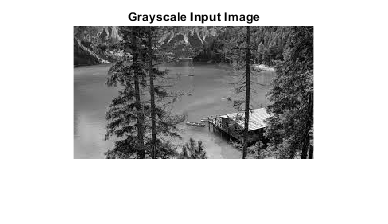
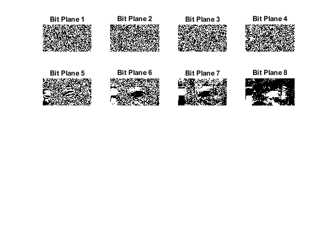

clc
clear all
close all
[file, path] = uigetfile({'*.*', 'All Files'; '*.jpg;*.jpeg;*.png;*.bmp', 'Image Files (*.jpg, *.png, *.bmp)'}, 'Select an Image');
if isequal(file, 0)
disp('No file selected. Exiting.');
return;
end
imagePath = fullfile(path, file);
originalImage = imread(imagePath);
if size(originalImage, 3) == 3
grayscaleImage = rgb2gray(originalImage);
else
grayscaleImage = originalImage;
end
figure;
imshow(grayscaleImage, []);
title('Grayscale Input Image');
[rows, cols] = size(grayscaleImage);
bitPlanes = cell(1, 8);
for i = 1:8
bitPlanes{i} = bitget(grayscaleImage, i) * 2^(i-1);
end
figure;
for i = 1:8
subplot(4, 4, i);
imshow(bitPlanes{i}, []);
title(['Bit Plane ', num2str(i)]);
end
for i = 1:4
subplot(4, 4, i);
axis off;
end
 